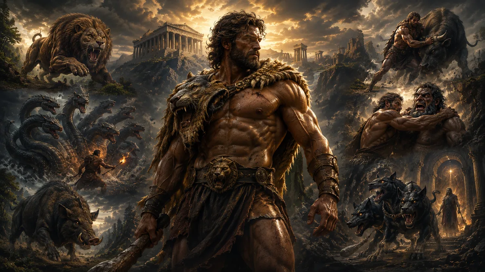

Yunan mitolojisinde birçok kahraman vardır; fakat hiçbiri Herakles kadar geniş bir coğrafyada, bu kadar uzun süre ve bu kadar güçlü bir etkiyle hatırlanmamıştır. Onun adı yalnızca olağanüstü kuvvetle değil, insanın kendi kaderiyle mücadelesiyle de anılır. Herakles, canavarları öldüren, krallara hizmet eden, yeraltı dünyasına inen, tanrılarla ve ölümlülerle aynı hikâyede yer alan büyük bir figürdür. Ancak onu gerçekten ilginç yapan şey yalnızca gücü değildir. Herakles'in hikâyesi, büyük bir güce sahip olmanın insanı otomatik olarak mutlu, özgür ya da hatasız kılmadığını gösterir.
Bugün Herakles çoğu zaman "Herkül" adıyla bilinir. Bu isim, onun Roma mitolojisindeki karşılığı olan Hercules'ten gelir. Yunan dünyasında ise adı Herakles'tir ve bu ad bile başlı başına dikkat çekicidir. Çünkü "Herakles" adı genellikle "Hera'nın şanı" ya da "Hera ile bağlantılı ün" anlamında yorumlanır. Oysa Hera, Herakles'in hayatı boyunca en büyük düşmanlarından biri olacaktır. Bu yüzden kahramanın adı ile kaderi arasında mitolojik bir ironi vardır. Hayatı boyunca Hera'nın öfkesiyle mücadele eden bu figür, sonunda adını bile onun üzerinden taşır.
Herakles'in hikâyesi doğduğu andan itibaren sıradan değildir. Babası Zeus, annesi ise ölümlü bir kadın olan Alkmene'dir. Bu nedenle Herakles hem tanrısal hem de insani bir kimlik taşır. Gücü tanrısal kökeninden gelir; acıları, hataları ve pişmanlıkları ise onu ölümlü dünyaya bağlar. Yunan mitolojisinde onu bu kadar kalıcı yapan şey de tam olarak bu ikili yapıdır. Herakles bir tanrı gibi güçlüdür ama bir insan gibi acı çeker.
Onun hayatındaki en büyük kırılma, Hera'nın gönderdiği delilik sonucunda kendi ailesini öldürmesiyle başlar. Bu olay, Herakles'i yalnızca güçlü bir savaşçı olmaktan çıkarır ve trajik bir kahramana dönüştürür. Çünkü 12 Görev olarak bilinen ünlü mücadelelerin arkasında yalnızca macera arzusu yoktur. Herakles bu görevleri bir ün kazanmak için değil, işlediği korkunç suçtan arınmak için üstlenir. Bu ayrıntı çoğu zaman gözden kaçar; fakat Herakles efsanesinin asıl ağırlığı burada yatar.
Bu makalede Herakles'in kim olduğunu, neden Herkül adıyla da bilindiğini, doğumundan ölümüne kadar yaşadığı en önemli olayları, 12 Görev'in ne anlama geldiğini ve onun neden yalnızca Yunan mitolojisinin değil, dünya kültür tarihinin de en güçlü kahramanlarından biri hâline geldiğini ele alacağız. Çünkü Herakles'in hikâyesi yalnızca kas gücüyle kazanılmış zaferlerden ibaret değildir. O, insanın suçlulukla, kaderle, öfkeyle ve ölümsüzlük arzusuyla verdiği en eski mücadelelerden biridir.
Herakles Kimdir?
Herakles, Yunan mitolojisinde Zeus ile Alkmene'nin oğludur. Annesi ölümlü olduğu için Herakles dünyaya bir tanrı olarak değil, olağanüstü güçlere sahip yarı tanrısal bir kahraman olarak gelir. Bu durum onun hikâyesinin bütün yönünü belirler. Çünkü Herakles ne tamamen tanrıların dünyasına aittir ne de sıradan insanlar arasında huzurlu bir yaşam sürebilecek kadar normaldir. Onun hayatı, bu iki alan arasında sıkışmış bir varoluşun hikâyesidir.
Antik Yunanlılar için Herakles, yalnızca güçlü bir kahraman değildi. O, insanın aşılması imkânsız görünen engeller karşısında gösterdiği dayanıklılığın sembolüydü. Nemea Aslanı'nı öldürmesi, Hydra'yla savaşması ya da Kerberos'u yeraltından çıkarması gibi sahneler ilk bakışta fiziksel güç gösterileri gibi görünür. Ancak bu görevlerin tamamı, kahramanın farklı korkularla ve sınırlarla yüzleşmesini anlatır. Herakles doğayla, ölümle, zehirle, karanlıkla, kaosla ve kendi içindeki yıkıcı güçle mücadele eder.
Onu diğer kahramanlardan ayıran en önemli özelliklerden biri, yenilmez görünmesine rağmen kırılgan bir karakter olmasıdır. Herakles öfkeye kapılabilir, hata yapabilir, acı çekebilir ve pişmanlık duyabilir. Bu yönüyle Yunan mitolojisinin daha kusursuz ya da daha aristokrat kahramanlarından farklıdır. Onda kaba güç kadar insani zaaflar da vardır. Bu nedenle Herakles, antik dünyada yalnızca hayranlık duyulan değil, aynı zamanda insanların kendi zorluklarını yansıtabildiği bir figür hâline gelmiştir.
Herakles'in hayatı boyunca sürekli sınanması da bu yüzden önemlidir. Daha bebekken Hera'nın gönderdiği yılanlarla karşılaşır. Gençliğinde olağanüstü gücüyle dikkat çeker. Yetişkin olduğunda ise kendi hayatını altüst eden bir felaketin ardından arınmak için Eurystheus'un hizmetine girmek zorunda kalır. Yani Herakles'in kahramanlığı yalnızca düşmanlarını yenmesinden değil, yıkıma uğradıktan sonra yeniden ayağa kalkabilmesinden doğar.
Bu nedenle Herakles'i yalnızca "Yunan mitolojisinin en güçlü kahramanı" diye tanımlamak doğru ama eksik olur. O, gücün ne kadar büyük bir armağan ve aynı zamanda ne kadar ağır bir yük olabileceğini gösteren mitolojik bir figürdür. Onun hikâyesinde kahramanlık, hatasız olmak anlamına gelmez. Tam tersine, büyük hataların ve ağır bedellerin ardından bile mücadele etmeyi sürdürebilmek anlamına gelir.
Herakles ile Herkül Aynı Kişi mi?
Bugün Türkiye'de ve dünyada birçok kişi bu kahramanı "Herkül" adıyla tanır. Bunun nedeni, Roma mitolojisindeki Hercules adının modern dillere daha yaygın biçimde geçmiş olmasıdır. Ancak hikâyenin Yunan kökenli biçiminde kahramanın adı Herakles'tir. Yani Herakles ile Herkül temelde aynı mitolojik figürdür; fakat adlandırma ve bazı kültürel ayrıntılar Yunan ve Roma geleneklerinde farklılaşmıştır.
Yunan dünyasında Herakles, Zeus'un oğlu ve Hera'nın öfkesiyle sınanan büyük kahramandır. Roma kültüründe Hercules adıyla benimsenmiş, zamanla Roma toplumunun güç, dayanıklılık ve zafer idealleriyle de ilişkilendirilmiştir. Romalılar Herakles'i yalnızca Yunanlardan devralmakla kalmamış, onu kendi dünyalarına uyarlamışlardır. Bu yüzden Roma sanatında Hercules daha belirgin biçimde fiziksel güç, askerî başarı ve erkeklik idealiyle ön plana çıkar.
Bununla birlikte anlatının ana gövdesi değişmez. Nemea Aslanı, Hydra, Erymanthos Yaban Domuzu, Kerberos ve diğer görevler hem Yunan hem Roma geleneğinde kahramanın kimliğini belirleyen temel unsurlar olarak kalır. Farklılık daha çok isimde, yorumda ve kültürel vurgudadır. Yunan mitolojisinden söz ederken "Herakles" adını kullanmak daha doğru kabul edilir; "Herkül" ise Roma ve modern popüler kültürde yaygınlaşmış biçimdir.
Bu ayrımı bilmek özellikle önemlidir. Çünkü Herakles hakkında araştırma yapan birçok kişi "Herkül kimdir?" diye arama yaparken aslında Yunan mitolojisindeki Herakles'i öğrenmek ister. Bu nedenle iki ad arasında kesin bir kopukluk yoktur; fakat akademik ve tarihsel bağlamda adların hangi geleneğe ait olduğunu bilmek gerekir. Kısaca söylemek gerekirse Herakles, Yunan mitolojisinin kahramanıdır; Herkül ise aynı kahramanın Roma dünyasında ve modern kültürde yaygınlaşmış adıdır.
Herakles Nasıl Doğdu?
Herakles'in hikâyesi, Yunan mitolojisindeki birçok kahramandan farklı olarak doğduğu gün değil, daha dünyaya gelmeden önce başlar. Çünkü onun doğumu yalnızca bir çocuğun dünyaya gelişi değil, Zeus'un iradesi, Hera'nın öfkesi ve kader tanrıçalarının dokuduğu karmaşık bir planın parçasıdır. Bu nedenle Herakles'in hayatını anlamak isteyen biri için doğum hikâyesi, bütün efsanenin temelini oluşturur.
Antik kaynaklara göre Zeus, Perseus soyundan gelen Alkmene'ye âşık olur. Ancak Alkmene evlidir ve eşi Amphitryon savaştadır. Zeus, Amphitryon'un kılığına girerek Alkmene'nin yanına gelir ve efsaneye göre o geceyi normalden üç kat daha uzun sürdürür. Daha sonra gerçek Amphitryon savaştan döner ve aynı gece eşiyle birlikte olur. Böylece Alkmene ikiz çocuklara hamile kalır. Bunlardan biri Zeus'un oğlu Herakles, diğeri ise ölümlü Amphitryon'un oğlu İphikles'tir.
Bu ayrıntı yalnızca ilginç bir mitolojik olay değildir. Aynı anne tarafından doğmalarına rağmen farklı babalara sahip olmaları, iki kardeş arasındaki temel farkı da açıklar. İphikles sıradan bir insan olarak büyürken Herakles daha doğduğu andan itibaren tanrısal gücü taşıyan bir kahraman olarak görülür. Antik Yunan mitolojisinde bu tür doğumlar sıra dışı değildir; ancak Herakles'in durumu, ileride yaşayacağı olayların büyüklüğü nedeniyle çok daha dikkat çekici hâle gelir.
Zeus, doğacak çocuğunun büyük bir kahraman olacağını ve soyunun uzun yıllar boyunca ün kazanacağını bilir. Hatta bazı antik anlatılarda Zeus, Perseus soyundan o gün doğacak çocuğun Argos ve çevresindeki topraklara hükmedeceğini ilan eder. Fakat bu söz, Hera'nın dikkatinden kaçmaz.
Zeus'un ölümlü kadınlarla yaşadığı ilişkiler nedeniyle sık sık öfkeye kapılan Hera, bu kez doğrudan çocuğun kaderine müdahale etmeye karar verir. Antik kaynaklara göre doğum tanrıçası Eileithyia'nın ve doğum sürecini etkileyen ilahi güçlerin yardımıyla Alkmene'nin doğumunu geciktirir. Aynı anda Perseus soyundan gelen başka bir bebeğin, Eurystheus'un planlanandan önce doğmasını sağlar. Böylece Zeus'un "ilk doğan çocuk kral olacak" sözü Herakles yerine Eurystheus için geçerli hâle gelir.
İlk bakışta küçük gibi görünen bu olay, aslında bütün efsanenin yönünü değiştirir. Çünkü Herakles ileride gerçekleştireceği on iki görevi kendi isteğiyle değil, işte bu Eurystheus'un buyruğu altında yerine getirmek zorunda kalacaktır. Başka bir ifadeyle Hera'nın doğum anında yaptığı müdahale, Herakles'in bütün yaşamını şekillendiren ilk büyük darbeyi oluşturur.
Daha Herakles dünyaya gelmeden başlayan bu mücadele, aslında Yunan mitolojisinin en önemli temalarından birini gösterir. Kahramanlar yalnızca kendi seçimleriyle değil, doğdukları andan itibaren kaderleriyle de mücadele etmek zorundadır. Herakles'in hayatındaki en büyük savaşlardan biri de henüz ilk nefesini almadan başlamıştır.
Hera Neden Herakles'ten Nefret Ediyordu?
Herakles'in hayatı boyunca peşini bırakmayan en büyük düşman ne bir canavar ne de rakip bir kahramandır. Bu kişi, Olimpos'un kraliçesi ve Zeus'un eşi olan Hera'dır. Yunan mitolojisinde Hera çoğu zaman evliliğin ve aile düzeninin koruyucusu olarak tanımlansa da, Zeus'un bitmek bilmeyen sadakatsizlikleri nedeniyle birçok efsanede öfkeli ve intikamcı yönüyle de karşımıza çıkar.
Herakles'in Hera'nın hedefi hâline gelmesinin nedeni ise yaptığı herhangi bir davranış değildir. Herakles henüz hiçbir seçim yapmadan, hatta dünyaya gelmeden önce bile Zeus'un sadakatsizliğinin yaşayan kanıtı olarak görülmektedir. Bu yüzden Hera'nın öfkesi doğrudan çocuğa yönelir. Modern okur için bu durum haksız görünebilir; ancak Yunan mitolojisinde tanrıların davranışları her zaman insanların adalet anlayışıyla örtüşmez. Tanrılar tutkularıyla hareket edebilir, öfkelerini yıllarca sürdürebilir ve bir insanın kaderini doğrudan değiştirebilirler.
Hera'nın Herakles'e yönelik ilk saldırısı, daha bebekken gerçekleşir. Antik anlatıya göre Herakles ile ikiz kardeşi beşikte uyurken Hera iki büyük yılan gönderir. Amaç, Zeus'un oğlunu daha çocuk yaşta ortadan kaldırmaktır. Ancak beklenmedik bir şey olur. Henüz kundaktaki Herakles korkuya kapılmak yerine iki yılanı elleriyle kavrar ve onları boğarak öldürür.
Bu sahne, Yunan sanatında en sık tasvir edilen Herakles anlatılarından biri hâline gelmiştir. Çünkü burada yalnızca olağanüstü gücü değil, kahramanın kaderi de ilk kez görünür olur. Daha bebekken karşısına çıkan ölümcül tehlikeyi yenmesi, onun sıradan bir insan olmayacağını gösteren ilk işaret olarak kabul edilir.
Ancak bu olay Hera'nın öfkesini sona erdirmez. Tam tersine, bu başarısız girişim iki karakter arasındaki uzun mücadelenin başlangıcı olur. Kahraman büyüdükçe Hera'nın planları da büyüyecek, Herakles'in karşılaşacağı en ağır sınavların çoğu doğrudan ya da dolaylı biçimde onun müdahalesiyle ortaya çıkacaktır.
İşin ironik tarafı ise Herakles'in adında gizlidir. Yaşamı boyunca Hera'nın öfkesine maruz kalan bu kahraman, sonunda bütün Yunan dünyasında onun adıyla anılacaktır. Böylece mitoloji, en büyük düşmanlığın bile bazen ölümsüz bir şöhretin parçasına dönüşebileceğini gösteren dikkat çekici bir ironi yaratır.
Herakles Nasıl Bu Kadar Güçlü Oldu?
Herakles'in olağanüstü gücü çoğu zaman yalnızca Zeus'un oğlu olmasına bağlanır. Gerçekten de tanrısal kökeni, onu sıradan insanlardan ayıran en önemli özelliklerden biridir. Ancak antik kaynaklar dikkatle incelendiğinde Herakles'in yalnızca doğuştan güçlü bir kahraman olarak tasvir edilmediği görülür. O, aynı zamanda çocukluğundan itibaren eğitim alan, kendisini geliştiren ve farklı alanlarda ustalaşan bir karakterdir. Bu yönüyle Herakles'in başarıları yalnızca ilahi mirasının değil, uzun yıllar süren hazırlığın da sonucudur.
Yunan mitolojisine göre Herakles gençlik yıllarında dönemin en saygın eğitmenlerinden ders alır. Güreş, okçuluk, mızrak kullanımı, savaş arabası sürme, kılıç dövüşü ve beden eğitimi gibi alanlarda yetiştirilir. Bunun yanında müzik eğitimi de alır. Antik Yunan'da iyi bir kahramanın yalnızca savaşmayı değil, kültürel eğitim görmeyi de bilmesi beklenirdi. Ancak Herakles'in karakteri burada da kendisini gösterir. Gücü zaman zaman kontrol edilmesi zor bir hâl alır ve öfkesine yenildiği bir olay sırasında müzik öğretmeni Linos'u öldürür. Bazı anlatılarda bunun kasıtlı olmadığı, öfke anında gerçekleşen trajik bir olay olduğu özellikle vurgulanır.
Bu ayrıntı Herakles'in kişiliğini anlamak açısından önemlidir. O, doğuştan kusursuz bir kahraman değildir. Olağanüstü fiziksel güce sahip olmasına rağmen, bu gücü kontrol etmeyi öğrenmek zorundadır. Yunan mitolojisinde gerçek kahramanlık yalnızca büyük bir kuvvete sahip olmak değil, o kuvveti doğru zamanda ve doğru amaç için kullanabilmektir. Herakles'in hayatı boyunca yaşayacağı pek çok trajedinin temelinde de tam olarak bu mücadele yer alacaktır.
Gençlik yıllarında yaşanan bir başka önemli olay ise "Erdem ile Haz Arasında Herakles" olarak bilinen ünlü anlatıdır. Bu hikâye ilk kez filozof Prodikos'un aktardığı biçimiyle günümüze ulaşmış, daha sonra Ksenophon tarafından da aktarılmıştır. Anlatıya göre Herakles bir yol ayrımında iki kadınla karşılaşır. Bunlardan biri kolay, rahat ve zahmetsiz bir yaşam vaat ederken diğeri zorlu ama onurlu bir hayat önerir. Herakles ikinci yolu seçer. Her ne kadar bu hikâye klasik mitolojik olaylardan ziyade ahlaki bir alegori niteliği taşısa da, Antik Yunan düşüncesinde Herakles'in karakterini en iyi özetleyen anlatılardan biri hâline gelmiştir. Çünkü onun bütün yaşamı, kolay olanı değil, en ağır yükü taşıyan yolu seçmekle geçecektir.
Bu nedenle Herakles'in gücü yalnızca kaslarında aranmaz. Antik yazarlar onu fiziksel kuvvet kadar dayanıklılığı, sabrı ve mücadele azmiyle de öne çıkarırlar. Karşısına çıkan her engeli kaba kuvvetle çözmez; zaman zaman zekâsını kullanır, gerektiğinde yardım alır ve başarısız olduğu anlardan ders çıkarır. İşte bu özellikleri, onu yalnızca güçlü bir savaşçı olmaktan çıkarıp gerçek bir kahramana dönüştürür.
Herakles Neden 12 Görevi Yapmak Zorunda Kaldı?
Herakles denildiğinde akla ilk gelen olay şüphesiz On İki Görev'dir. Nemea Aslanı, Hydra, Kerberos ve diğer büyük mücadeleler, onun adını Yunan mitolojisinin en ünlü kahramanı hâline getirmiştir. Ancak bu görevlerin neden başladığı çoğu zaman birkaç cümleyle geçiştirilir. Oysa Herakles'in bütün hikâyesini değiştiren en önemli kırılma noktası tam olarak burada yaşanır.
Herakles yetişkinlik çağına ulaştığında Megara ile evlenir ve çocuk sahibi olur. Görünüşe göre artık huzurlu bir yaşam kurmuştur. Fakat Hera, yıllardır sürdürdüğü düşmanlığı burada da sona erdirmez. Antik kaynaklara göre kahramanın zihnine korkunç bir delilik gönderir. Bu delilik sırasında Herakles gerçekliği algılayamaz ve en ağır trajedilerden birini yaşar. Kendi çocuklarını, bazı anlatılarda ise Megara'yı da düşmanları sanarak öldürür.
Yunan mitolojisinin en sarsıcı sahnelerinden biri budur. Çünkü Herakles'in karşısında bu kez bir canavar ya da yabancı bir düşman yoktur. Felaket doğrudan kendi elleriyle gerçekleşmiştir. Delilik sona erdiğinde yaptığı şeyin farkına varır ve derin bir yıkım yaşar. Antik tragedyalarda bu sahne yalnızca suçun değil, suçun ardından gelen vicdan azabının da en güçlü örneklerinden biri olarak işlenmiştir.
İşte Herakles'in On İki Görev'e başlamasının gerçek nedeni budur. O görevler bir kahramanlık gösterisi ya da güç denemesi değildir. Herakles işlediği korkunç suçtan arınmanın yolunu aramaktadır. Bunun üzerine Delfi'deki Apollon Kâhini'ne danışır. Kahin ona Tiryns Kralı Eurystheus'un hizmetine girmesini ve onun vereceği görevleri yerine getirmesini söyler. Böylece daha doğmadan önce Hera'nın müdahalesiyle kral olan Eurystheus, yıllar sonra Herakles'in kaderini belirleyen kişi hâline gelir.
Başlangıçta Herakles'e on görev verilir. Ancak Eurystheus, Hydra'yı öldürürken yeğeni İolaos'tan yardım almasını ve Augeias'ın ahırlarını temizlerken bunun karşılığında ödül istemesini gerekçe göstererek bu iki görevi geçersiz sayar. Bunun üzerine iki yeni görev daha eklenir ve sayı on ikiye çıkar.
Bu ayrıntı oldukça önemlidir. Çünkü Herakles'in gerçekleştirdiği görevler yalnızca fiziksel olarak zor değildir; aynı zamanda bilinçli biçimde imkânsız olacak şekilde seçilmiştir. Eurystheus'un amacı kahramanın başarılı olması değil, görevler sırasında ölmesidir. Fakat Herakles her defasında beklenmedik bir çözüm bulur ve giderek yalnızca Yunan dünyasının değil, bütün Akdeniz mitolojisinin en büyük kahramanı olarak ün kazanır.
On İki Görev'in asıl anlamı da burada ortaya çıkar. Bunlar birbirinden bağımsız maceralar değildir. Her biri, Herakles'in işlediği suçun ardından çıktığı uzun arınma yolculuğunun bir parçasıdır. Bu nedenle görevler tamamlandığında değişen yalnızca dünyanın düzeni değil, Herakles'in kendisidir. O artık yalnızca olağanüstü güçlü bir savaşçı değil; acının, pişmanlığın ve mücadelenin içinden geçerek yeniden doğmuş bir kahramandır.
Herakles'in 12 Görevi Nelerdi?
Herakles'in On İki Görevi, Yunan mitolojisinin en bilinen anlatılarından biridir. Ancak bu görevleri yalnızca güçlü bir kahramanın canavar avına çıkması olarak görmek doğru değildir. Her biri farklı bir tehlikeyi temsil eder ve birlikte ele alındığında Herakles'in fiziksel olduğu kadar zihinsel ve ahlaki dönüşümünü de gösterir. Görevler ilerledikçe karşısındaki düşmanlar yalnızca daha güçlü değil, aynı zamanda daha karmaşık hâle gelir. Bu yüzden On İki Görev, kahramanın adım adım olgunlaşmasını anlatan uzun bir yolculuk olarak okunmalıdır.
İlk görev, Nemea bölgesinde yaşayan ve hiçbir silahın derisini delemediği söylenen aslanı öldürmektir. Herakles oklarının işe yaramadığını görünce yaratıkla çıplak elleriyle mücadele eder ve onu boğarak öldürür. Daha sonra pençelerini kullanarak postunu yüzmeyi başarır ve bu post, hayatının geri kalanında onu koruyan en önemli simgelerden biri hâline gelir. Aslan postu, zamanla Herakles'in en ayırt edici özelliklerinden biri olarak sanat eserlerinde de sürekli karşımıza çıkar.
İkinci görevde karşısına Lerna Hydra'sı çıkar. Bir başı kesildiğinde yerine iki yeni baş çıkan bu yılanı yalnızca fiziksel güçle yenmek mümkün değildir. Herakles, yeğeni İolaos'un yardımıyla kesilen boyunları dağlayarak yeni başların çıkmasını engeller ve sonunda ölümsüz başı büyük bir kayanın altına gömer. Bu görev, kaba kuvvetin tek başına yeterli olmadığını gösteren ilk büyük örneklerden biridir. Herakles burada zekâ, iş birliği ve stratejinin de en az güç kadar önemli olduğunu öğrenir.
Üçüncü görevde Artemis'e adanmış kutsal Keryneia Geyiği'ni canlı olarak yakalaması istenir. Bir yıl boyunca geyiğin peşinden koştuğu anlatılır. Sonunda hayvanı yaralamadan ele geçirir ve tanrıçanın öfkesini üzerine çekmeden Eurystheus'a götürmeyi başarır. Bu görev, Herakles'in yalnızca savaşmayı bilen biri olmadığını; sabır göstermesi ve tanrılara saygı duyması gerektiğini de ortaya koyar.
Dördüncü görev, Erymanthos Dağı'nda yaşayan dev yaban domuzunu canlı yakalamaktır. Herakles yoğun kar altında yürüttüğü zorlu takip sonunda hayvanı yorarak etkisiz hâle getirir ve omzunda taşıyarak Eurystheus'un karşısına çıkarır. Antik anlatılarda Eurystheus'un korkudan büyük bir küpün içine saklandığı bile aktarılır. Bu ayrıntı, Herakles'in ününün artık yalnızca düşmanlarını değil, görevleri veren kralı bile korkutacak seviyeye ulaştığını gösterir.
Beşinci görev ise Augeias'ın ahırlarını temizlemektir. İlk bakışta diğer görevlerden daha sıradan görünen bu iş, aslında yıllardır temizlenmeyen devasa ahırların tek bir gün içinde arındırılmasını gerektirir. Herakles burada alışılmış yöntemleri kullanmaz. Yakındaki iki nehrin yatağını değiştirerek suları ahırlardan geçirir ve imkânsız görünen görevi zekâsıyla tamamlar. Bu olay, Herakles'in yalnızca fiziksel gücüyle değil, pratik düşünme yeteneğiyle de öne çıktığını gösteren en güzel örneklerden biridir.
Altıncı görevde Stymphalos Gölü çevresini dehşete düşüren, tunç gagalı ve tunç tüyleri bulunan yırtıcı kuşları yok etmesi gerekir. Athena'nın verdiği bronz çıngırak sayesinde kuşları yuvalarından havalandırır ve ardından oklarıyla onları etkisiz hâle getirir. Böylece doğanın dengesini bozan bir başka tehdidi de ortadan kaldırmış olur.
İlk altı görev tamamlandığında Herakles artık yalnızca Yunanistan'ın değil, bütün bilinen dünyanın en büyük kahramanı olarak tanınmaya başlamıştır. Fakat önündeki görevler bundan sonra çok daha uzak diyarlara, çok daha tehlikeli yaratıklara ve sonunda yaşayan hiçbir insanın kolay kolay dönmediği yeraltı dünyasına kadar uzanacaktır.
Herakles'in Son Altı Görevi
İlk altı görev daha çok Yunan dünyasının sınırları içinde geçerken, sonraki görevler Herakles'i mitolojik evrenin en uzak ve en tehlikeli bölgelerine götürür. Böylece kahramanın mücadelesi yalnızca vahşi hayvanlarla değil, tanrıların koruduğu kutsal varlıklarla, efsanevi hükümdarlarla ve ölümün kendisiyle karşı karşıya geldiği çok daha büyük bir yolculuğa dönüşür.
Yedinci görevde Girit'e giderek Poseidon'a adanmış kudretli boğayı canlı olarak yakalaması istenir. Bu boğa, daha önce Minos'a gönderilen ve Minotor efsanesinin başlamasında dolaylı rol oynayan kutsal hayvanla ilişkilendirilir. Herakles boğayı etkisiz hâle getirip denizi aşarak Eurystheus'a ulaştırmayı başarır. Böylece Minos efsaneleriyle Herakles'in hikâyesi de aynı mitolojik evrende kesişmiş olur.
Sekizinci görev, Trakya Kralı Diomedes'in insan etiyle beslenen vahşi kısraklarını ele geçirmektir. Antik anlatılara göre Herakles, Diomedes'i yenerek onu kendi atlarına yem eder. Bunun ardından saldırganlıklarını kaybeden hayvanları kontrol altına alır ve Eurystheus'a götürür. Bu görev, şiddetin sonunda yine şiddeti doğurduğunu gösteren ilginç mitolojik sahnelerden biridir.
Dokuzuncu görevde Herakles'in hedefi, Amazon Kraliçesi Hippolyta'nın büyülü kemeridir. Başlangıçta Hippolyta kemeri gönüllü olarak vermeye razı olur. Ancak Hera, Amazonlar arasında Herakles'in kraliçelerini kaçırmaya geldiği söylentisini yayar. Bunun üzerine çıkan çatışma sonunda Hippolyta hayatını kaybeder ve Herakles kemeri alarak görevini tamamlar. Bu olay, Hera'nın Herakles'in hayatına müdahalesinin yıllar geçse bile sona ermediğini gösteren örneklerden biridir.
Onuncu görev, dünyanın en batısında yaşayan dev Geryon'un kırmızı sığırlarını getirmektir. Bu uzun yolculuk sırasında Herakles'in Akdeniz'in girişinde iki büyük kaya sütunu oluşturduğu anlatılır. Daha sonra "Herakles Sütunları" olarak anılacak bu bölge, günümüzde Cebelitarık Boğazı ile ilişkilendirilmektedir. Böylece kahramanın yolculuğu yalnızca mitolojik değil, antik dünyanın coğrafi hayal gücünü de şekillendiren anlatılardan biri hâline gelir.
On birinci görev, Hesperides Bahçesi'ndeki altın elmaları ele geçirmektir. Bu bahçe sıradan bir yer değildir; Gaia'nın Hera'ya düğün armağanı olarak verdiği altın elmalar burada saklanmaktadır ve bir ejderha tarafından korunmaktadır. Antik kaynaklar bu görevin ayrıntılarını farklı şekillerde aktarır. En yaygın anlatıya göre Herakles, gökyüzünü omuzlarında taşıyan Atlas'ın yardımıyla elmalara ulaşır. Ancak Atlas geri dönmek istemeyince Herakles zekâsını kullanarak onu kısa süreliğine yeniden gökyüzünü taşımaya ikna eder ve altın elmalarla birlikte oradan ayrılır.
Son görev ise bütün mitolojinin en zor sınavlarından biri kabul edilir. Eurystheus bu kez Herakles'ten Yeraltı Dünyası'nın bekçisi Kerberos'u canlı olarak yeryüzüne çıkarmasını ister. Üç başlı bu korkunç köpek Hades'in kapısını korumaktadır ve yaşayan hiçbir insanın onu aşması beklenmez. Herakles yeraltına iner, Hades'ten izin alır ve hiçbir silah kullanmadan Kerberos'u kontrol altına alarak yeryüzüne çıkarır. Daha sonra söz verdiği gibi onu yeniden Hades'e götürür.
Bu son görev yalnızca Herakles'in fiziksel gücünü değil, ölümün sınırlarını bile aşabilecek kadar büyük bir kahraman olduğunu gösterir. Yeraltı dünyasına canlı girip canlı dönebilen çok az mitolojik figür vardır ve Herakles bunların en önemlilerinden biridir. Böylece yıllar süren arınma yolculuğu tamamlanır ve Yunan dünyasının en büyük kahramanı olarak ünü artık tartışılmaz hâle gelir.
Herakles Nasıl Öldü?
Herakles'in On İki Görev'i tamamlaması, onun bütün sıkıntılarının sona erdiği anlamına gelmez. Aksine, Yunan mitolojisinin en büyük kahramanı hayatının son yıllarında en ağır acılarından biriyle karşılaşır. İlginç olan ise bu kez karşısında ne Hydra vardır ne Kerberos ne de başka bir canavar. Herakles'i ölüme götüren olay, yıllar önce yaşanmış tek bir karşılaşmanın gecikmiş sonucudur.
Görevlerini tamamladıktan sonra Herakles, Kalydon kralının kızı Deianeira ile evlenir. Bir süre huzurlu bir yaşam sürerler. Ancak yolculuklarından biri sırasında Evenos Nehri'ni geçmeleri gerekir. Burada Nessos adında bir kentaur insanları sırtında karşı kıyıya taşıyan kayıkçı gibi hizmet vermektedir. Herakles nehri kendi gücüyle geçerken, Deianeira'yı Nessos'un karşıya geçirmesine izin verir.
Fakat Nessos karşı kıyıya ulaştığında Deianeira'yı kaçırmaya çalışır. Bunun üzerine Herakles, Hydra'nın zehirli kanına batırılmış oklarından biriyle kentauru vurur. Ölüm döşeğindeki Nessos ise intikam almak için son bir oyun oynar. Deianeira'ya kendi kanını vererek bunun Herakles'in sevgisini sonsuza kadar koruyacak güçlü bir aşk iksiri olduğunu söyler. Gerçekte ise Hydra'nın zehri Nessos'un kanına karışmıştır ve bu kan ölümcül bir tuzaktan başka bir şey değildir.
Yıllar sonra Deianeira, Herakles'in İole adlı genç bir kadına ilgi duyduğunu düşünmeye başlar. Kocasını kaybetme korkusuna kapılan Deianeira, Nessos'un yıllar önce verdiği kana inanır ve onu Herakles'in giysisine sürer. Amacı zarar vermek değil, eşinin sevgisini yeniden kazanmaktır. Ancak giysi Herakles'in bedenine değdiği anda Hydra'nın zehri etkisini göstermeye başlar.
Antik kaynaklarda anlatıldığına göre giysi kahramanın tenine adeta yapışır. Çıkarmaya çalıştıkça derisiyle birlikte kopar ve dayanılmaz acılar verir. Herakles olağanüstü gücüne rağmen bu zehre karşı koyamaz. Çünkü onu öldüren şey sıradan bir yara değil, yıllar önce Hydra'yı öldürürken kendi kullandığı zehrin dolaylı sonucudur.
Bu ayrıntı son derece çarpıcıdır. Herakles, hayatı boyunca sayısız düşmanı yenmiş, ölümcül yaratıkları alt etmiş ve yeraltı dünyasından bile sağ dönmüştür. Fakat sonunda onu mağlup eden şey, geçmişte elde ettiği bir zaferin beklenmedik sonucudur. Yunan mitolojisi burada yine önemli bir düşünceyi hatırlatır: İnsan bazen en büyük başarısının gölgesinde kendi felaketini de taşır.
Herakles Tanrı Oldu mu?
Herakles'in ölümü, sıradan bir insanın ölümü gibi anlatılmaz. Çünkü onun hikâyesi, yaşamı boyunca olduğu gibi ölümünden sonra da diğer kahramanlardan ayrılır.
Dayanılmaz acılar içinde kalan Herakles, Oita Dağı'na çıkar ve kendisi için büyük bir odun yığını hazırlanmasını ister. Hiç kimse ateşi yakmaya cesaret edemez. Sonunda bazı anlatılara göre Poias, bazılarına göre ise onun oğlu Philoktetes bu görevi kabul eder. Karşılığında Herakles'in ünlü yayı ve Hydra'nın zehriyle kaplı oklarını alır. Bu silahlar daha sonra Troya Savaşı'nın kaderini değiştirecek kadar önemli hâle gelecektir.
Odun yığını alev aldığında Herakles'in ölümlü bedeni ateşin içinde kalır. Ancak antik kaynaklar burada dikkat çekici bir ayrım yapar. Ateş yalnızca onun ölümlü yanını yok eder. Zeus'un oğlu olan ilahi tarafı ise yok olmaz. Olimpos'taki tanrılar arasında yerini alır ve ölümsüzlüğe kavuşur.
Bu olay Herakles'i Yunan mitolojisinde benzersiz bir konuma yerleştirir. Çünkü o, doğuştan tanrı değildir. Yaşamı boyunca acı çeken, hata yapan, pişman olan ve ağır bedeller ödeyen bir kahramandır. Buna rağmen bütün sınavlarını tamamladıktan sonra tanrılar arasına kabul edilir. Böylece ölümlü bir insan olarak başladığı yolculuk, ilahi bir varlık olarak sona erer.
Daha da dikkat çekici olan ise Hera ile ilgili bölümdür. Hayatı boyunca Herakles'in en büyük düşmanı olan Hera'nın öfkesi, onun Olimpos'a yükselmesiyle sona erer. Antik anlatılara göre Hera sonunda Herakles'i kabul eder ve hatta kızı Hebe ile evlenmesine izin verir. Hebe, gençliğin tanrıçasıdır ve Olimpos'ta tanrılara nektar sunan ilahi figürlerden biridir. Böylece yıllarca süren düşmanlık, kahramanın tanrılar arasına katılmasıyla son bulur.
Bu son, Herakles'in hikâyesini diğer birçok kahramandan ayırır. Akhilleus büyük bir savaşçı olarak ölür, Odysseus uzun yolculuklardan sonra ülkesine döner; fakat Herakles bütün acılarının ardından ölümsüzlüğe ulaşır. Bu yüzden Antik Yunan dünyasında Herakles yalnızca kahraman olarak değil, aynı zamanda kültürel anlamda tapınım gören ilahi bir figür olarak da kabul edilmiştir.
Herakles Gerçekten Yaşadı mı?
Herakles'in gerçekten yaşamış bir kişi olup olmadığı, Antik Çağ'dan beri tartışılan konulardan biridir. Günümüzde onu Zeus'un yarı tanrı oğlu olarak doğrulayacak tarihsel ya da arkeolojik bir kanıt bulunmamaktadır. Bu nedenle Herakles, akademik açıdan Yunan mitolojisinin kahramanlık geleneği içinde değerlendirilir.
Bununla birlikte Herakles'in tamamen hayal gücünün ürünü olduğunu söylemek de meseleyi fazlasıyla basitleştirir. Çünkü birçok araştırmacı, bu karakterin tek bir kişiden değil, farklı dönemlerde yaşamış güçlü savaşçıların, yerel kahramanların ve halk anlatılarının zaman içinde birleşmesiyle oluşmuş olabileceğini düşünmektedir.
Herakles'in efsanelerinin geçtiği yerlerin önemli bir kısmı ise gerçektir. Tiryns, Miken, Nemea, Delfi, Girit ve Olimpia gibi merkezlerin tamamı arkeolojik olarak belgelenmiştir. Bu durum efsanelerin tarihsel olarak yaşandığını kanıtlamaz; ancak anlatıların tamamen hayali bir coğrafyada değil, Antik Yunan dünyasının gerçek şehirleri içinde şekillendiğini gösterir.
Özellikle Miken Çağı üzerine çalışan bazı araştırmacılar, Herakles anlatılarının Bronz Çağı'nda yaşamış savaşçı aristokrasinin kolektif hafızasını yansıtıyor olabileceğini ileri sürmektedir. Devasa yaban hayvanlarıyla mücadele, uzak diyarlara yapılan seferler ve krallara hizmet eden güçlü savaşçılar gibi temalar, tarihsel gerçeklikten tamamen kopuk görünmez. Ancak bunlar zaman içinde tanrılar, canavarlar ve doğaüstü olaylarla zenginleştirilerek mitolojik bir çerçeveye dönüştürülmüştür.
Bu nedenle bugün en dengeli yaklaşım şudur: Herakles'in Zeus'un oğlu olarak yaşamış tarihsel bir kişi olduğunu söyleyemeyiz. Ancak onun karakteri, Antik Yunan toplumunun kahramanlık anlayışını, ahlaki değerlerini ve kolektif hafızasını yansıtan en önemli mitolojik figürlerden biri olarak kabul edilir. Başka bir ifadeyle Herakles'in tarihsel gerçekliği kanıtlanmış değildir; fakat kültürel gerçekliği tartışılmazdır.
Herakles Efsanesi Ne Anlatıyor?
İlk bakışta Herakles'in hikâyesi, olağanüstü güce sahip bir kahramanın canavarlarla savaşmasını anlatan destansı bir macera gibi görünür. Ancak antik metinler dikkatle okunduğunda bu efsanenin çok daha derin bir anlam taşıdığı görülür. Çünkü Herakles'in karşısına çıkan her yaratık, her görev ve her yolculuk aslında insanın farklı bir korkusunu, zaafını ya da sınavını temsil eder.
Nemea Aslanı yenilmez gibi görünen engelleri simgelerken, Hydra insanın çözmeye çalıştıkça büyüyen sorunlarını hatırlatır. Augeias'ın yıllardır temizlenmeyen ahırları yalnızca fiziksel kirden değil, biriken yüklerden ve ihmal edilmiş sorunlardan arınmayı temsil eder. Kerberos ise ölüm korkusunun ve bilinmeyene duyulan endişenin sembolüdür. Bu nedenle Herakles'in yolculuğu yalnızca dış dünyadaki yaratıklara karşı verilmiş bir mücadele değildir; aynı zamanda insanın kendi sınırlarını aşma çabasını anlatan uzun bir dönüşüm hikâyesidir.
Efsanenin merkezinde yer alan bir başka tema ise kefarettir. Herakles, görevlerini ün kazanmak ya da zengin olmak için üstlenmez. Onu bu yolculuğa çıkaran şey, geri döndürülmesi mümkün olmayan korkunç bir hatanın ardından yeniden ayağa kalkma isteğidir. Yunan mitolojisinde birçok kahraman zafer kazanır; fakat Herakles'in farkı, zaferlerinin suçluluk duygusunun içinden doğmasıdır. Bu nedenle onun hikâyesi yalnızca güç üzerine değil, sorumluluk ve arınma üzerine de kuruludur.
Herakles'in yaşamı boyunca sürekli yolculuk etmesi de tesadüf değildir. Neredeyse bütün bilinen dünyayı dolaşır, yabancı halklarla karşılaşır, tanrıların kutsal bölgelerine girer, denizleri aşar ve sonunda yaşayan insanların girmeye cesaret edemediği Yeraltı Dünyası'na kadar ulaşır. Bu yönüyle Herakles, yalnızca fiziksel olarak güçlü bir savaşçı değil; bilinmeyene gitmeyi göze alan bir kâşif olarak da karşımıza çıkar.
Yunan düşüncesinde Herakles'in en önemli özelliklerinden biri de mücadeleden hiçbir zaman kaçmamasıdır. Karşısındaki görev ne kadar zor olursa olsun onu ertelemez ya da başkasına bırakmaz. Bazen başarısız olur, bazen yardım almak zorunda kalır, bazen acı çeker; ancak yoluna devam eder. Antik yazarların onu örnek bir kahraman olarak göstermesinin nedeni de kusursuz olması değil, düştüğü yerden tekrar kalkabilmesidir.
Belki de Herakles efsanesinin binlerce yıldır anlatılmasının temel nedeni tam olarak budur. Çünkü bu hikâye, insanın hayatındaki bütün engelleri kaba kuvvetle aşabileceğini söylemez. Tam tersine, gerçek kahramanlığın çoğu zaman sabır, dayanıklılık, pişmanlık ve yeniden başlayabilme cesaretiyle mümkün olduğunu hatırlatır.
Herakles Sanat Tarihini ve Popüler Kültürü Nasıl Etkiledi?
Herakles, Antik Yunan dünyasında yalnızca mitolojik bir kahraman olarak kalmamış, sanat tarihinin en çok tasvir edilen figürlerinden biri hâline gelmiştir. Özellikle MÖ 6. yüzyıldan itibaren Attika siyah figürlü ve kırmızı figürlü vazolar üzerinde Herakles'in görevlerini anlatan sahneler son derece yaygındır. Nemea Aslanı'yla mücadelesi, Hydra'yı öldürmesi ya da Kerberos'u Yeraltı Dünyası'ndan çıkarması gibi olaylar, antik sanatçıların tekrar tekrar işlediği konular arasında yer alır.
Roma döneminde ise Herakles, Hercules adıyla çok daha geniş bir coğrafyada benimsenmiştir. İmparatorlar ve komutanlar, onun gücünü ve dayanıklılığını kendi yönetimlerini simgelemek için kullanmıştır. Bu nedenle Roma heykel sanatında Hercules figürü yalnızca mitolojik bir karakter değil, aynı zamanda askerî başarı ve devlet otoritesinin de sembolü hâline gelmiştir.
Rönesans döneminde klasik dünyanın yeniden keşfedilmesiyle birlikte Herakles sanatçıların ilgisini tekrar çekmiştir. Antonio del Pollaiuolo, Peter Paul Rubens ve Francisco de Zurbarán gibi birçok ressam, Herakles'in görevlerini farklı yorumlarla resmetmiştir. Heykel sanatında ise kas yapısı ve anatomik gücü göstermek isteyen sanatçılar için Herakles ideal figürlerden biri olmuştur. Özellikle Roma dönemine ait Farnese Heraklesi heykeli, yüzyıllardır kahramanın en etkileyici tasvirlerinden biri olarak kabul edilir.
Modern popüler kültürde de Herakles etkisini sürdürmektedir. Romanlar, çizgi romanlar, video oyunları ve sinema filmleri onun hikâyesini yeniden yorumlamaya devam eder. Ancak bu uyarlamaların önemli bir kısmı antik kaynaklardan oldukça farklıdır. Özellikle bazı filmlerde Herakles yalnızca yenilmez bir savaşçı gibi gösterilirken, mitolojideki trajik yönü, ailesini kaybetmesi, suçluluk duygusu ve arınma yolculuğu çoğu zaman geri planda kalır. Oysa antik anlatıları güçlü yapan tam da bu insani yönleridir.
Bu nedenle günümüzde Herakles'i yalnızca kas gücüyle özdeşleştirmek, onun mitolojideki gerçek önemini eksik anlamak olur. Herakles'in kalıcılığı yalnızca güçlü olmasından değil, insanın acı, pişmanlık ve mücadeleyle kurduğu ilişkiyi evrensel bir hikâyeye dönüştürebilmesinden kaynaklanır.
Sonuç: Herakles Neden Yunan Mitolojisinin En Büyük Kahramanı Olarak Görülür?
Yunan mitolojisinde Akhilleus daha hızlı, Odysseus daha kurnaz, Perseus daha stratejik ya da Theseus daha başarılı hükümdar olabilir. Ancak hiçbir kahraman Herakles kadar geniş bir yaşam öyküsüne, bu kadar çok sınava ve bu kadar büyük bir kültürel etkiye sahip değildir.
Herakles'in hikâyesi doğduğu gün başlar ve ölümünden sonra bile sona ermez. Hera'nın öfkesiyle şekillenen çocukluğu, olağanüstü gücü, işlediği istemsiz suç, On İki Görev boyunca verdiği mücadele, Nessos'un hilesiyle gelen trajik ölümü ve sonunda Olimpos'a yükselerek ölümsüzlüğe kavuşması, onu yalnızca bir savaşçı değil, bütün bir yaşamı boyunca dönüşen bir kahraman hâline getirir.
Belki de Herakles'i diğer mitolojik figürlerden ayıran en önemli özellik budur. O hiçbir zaman kusursuz değildir. Hata yapar, acı çeker, öfkelenir, pişman olur ve ağır bedeller öder. Fakat bütün bunlara rağmen mücadeleyi bırakmaz. Yunan dünyasının gözünde gerçek kahramanlık da tam olarak burada başlar. Kahraman olmak, hiç düşmemek değil; düştükten sonra yeniden ayağa kalkabilmektir.
Bugün Herakles'in gerçekten yaşamış olduğunu kanıtlayan tarihsel veriler bulunmasa da, onun kültürel etkisi tartışılmazdır. Yaklaşık üç bin yıldır sanatçıları, filozofları, yazarları ve tarihçileri etkilemeye devam eden bu figür, yalnızca Antik Yunan'ın değil, insanlık tarihinin en güçlü mitolojik kahramanlarından biri olmayı sürdürmektedir. Onun hikâyesi, gücün tek başına yeterli olmadığını; cesaretin, sabrın ve sorumluluğun gerçek kahramanlığı oluşturduğunu anlatmaya bugün de devam etmektedir.
Sık Sorulan Sorular
Herakles kimdir?
Herakles, Yunan mitolojisinde Zeus ile Alkmene'nin oğlu olan yarı tanrısal kahramandır. Olağanüstü gücü, On İki Görev'i ve Olimpos'a yükselerek ölümsüzlüğe kavuşmasıyla tanınır.
Herakles ile Herkül aynı kişi mi?
Evet. Herakles, Yunan mitolojisindeki adıdır. Herkül (Hercules) ise aynı kahramanın Roma mitolojisindeki adıdır. Hikâyenin ana yapısı büyük ölçüde aynıdır.
Herakles neden 12 görevi yaptı?
Antik kaynaklara göre Hera'nın gönderdiği delilik sonucunda ailesini öldüren Herakles, bu suçtan arınabilmek için Delfi Kâhini'nin yönlendirmesiyle Kral Eurystheus'un hizmetine girer ve On İki Görev'i yerine getirir.
Herakles'i kim öldürdü?
Herakles doğrudan bir düşman tarafından öldürülmez. Nessos'un hilesi sonucu Hydra'nın zehri bulaşmış bir giysiyi giyer ve bu zehir onun ölümüne neden olur.
Herakles tanrı oldu mu?
Evet. Mitolojik anlatıya göre ölümlü bedeni Oita Dağı'ndaki cenaze ateşinde yok olurken, ilahi yönü Olimpos'a yükselir ve tanrılar arasına kabul edilir.
Herakles gerçekten yaşadı mı?
Herakles'in tarihsel olarak yaşamış olduğunu doğrulayan bir kanıt bulunmamaktadır. Ancak birçok araştırmacı, onun farklı yerel kahraman anlatılarının zaman içinde birleşmesiyle oluşmuş mitolojik bir figür olabileceğini düşünmektedir.
Kaynakça
Homer. The Odyssey. Penguin Classics.
Apollodorus. The Library. Harvard University Press.
Diodorus Siculus. Library of History. Loeb Classical Library.
Pindar. Nemean Odes. Loeb Classical Library.
Sophocles. Trachiniae. Loeb Classical Library.
Euripides. Heracles. Loeb Classical Library.
Ovid. Metamorphoses. Oxford World's Classics.
Robert Graves. The Greek Myths. Penguin Books.
Karl Kerényi. The Heroes of the Greeks. Thames & Hudson.
Timothy Gantz. Early Greek Myth. Johns Hopkins University Press.
The British Museum – Collection Online.
The Metropolitan Museum of Art – Heilbrunn Timeline of Art History.
Encyclopaedia Britannica – "Heracles", "Hercules", "Greek Mythology".